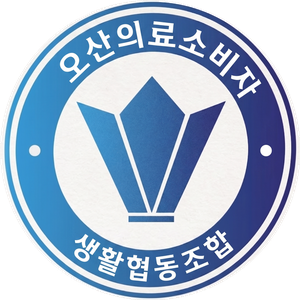
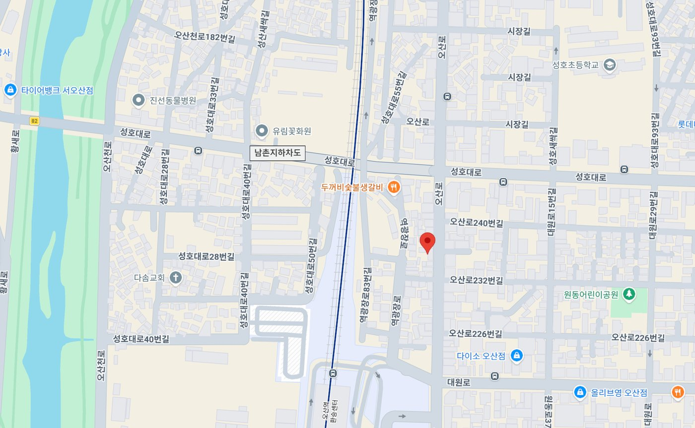

오산시민의원오산시민의원은 지역 주민들이 직접 뜻을 모아 세운 오산의료소비자생활협동조합 병원입니다. 병이 오기 전에 건강을 지키는 '주민 주치의'를 지향하며, 과잉진료 없이 최소한의 비용으로 양질의 진료를 제공하고자 합니다.
신경외과 · 정형외과를 중심으로 내과 · 이비인후과 · 가정의학과 진료와 함께, 목디스크 · 요통 · 척추측만증 · 오십견을 다루는 물리치료 · 도수치료까지 — 한 분 한 분을 정성껏 돌봐드리겠습니다.
도수치료는 약이나 기계가 아닌, 치료사의 손으로 몸의 불균형을 직접 바로잡는 치료입니다. 오산시민의원은 1:1 맞춤 도수치료로 통증의 재발까지 관리합니다.
정해진 매뉴얼이 아닌, 개인의 체형과 통증 패턴에 맞춘 치료 계획.
충분한 임상 경험을 갖춘 치료사가 처음부터 끝까지 직접 케어.
치료 후 자세·생활 습관 가이드까지 더해 통증의 재발을 줄입니다.
증상 뒤의 원인까지 살피는 꼼꼼한 진단.
환자 한 분 한 분에게 맞춘 치료 계획.
신경외과 전문의가 직접 진료하는 전문성.
회복에 집중할 수 있는 쾌적한 공간.
